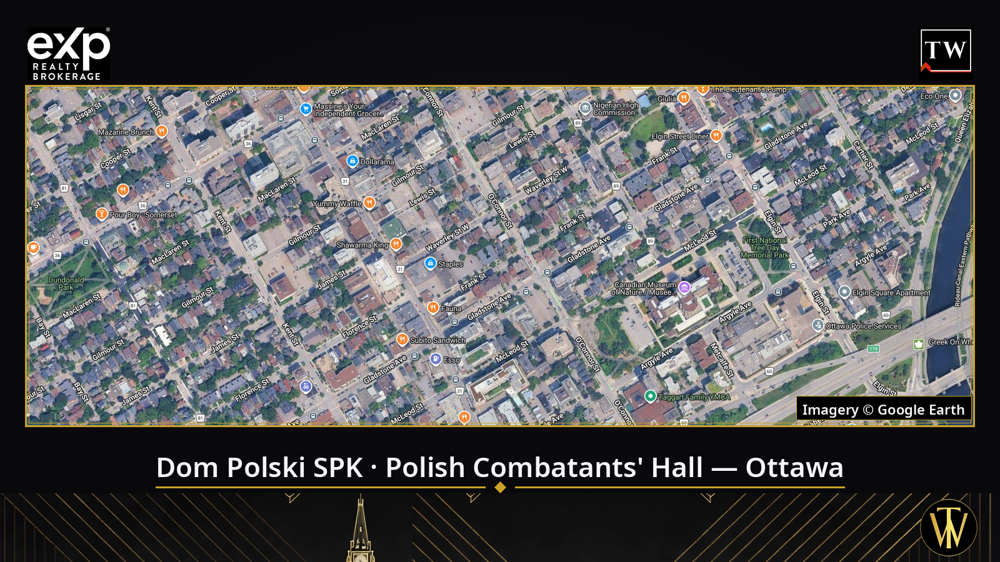

Satellite imagery: © Google Earth
Dom Polski Ottawa: the hall Polish soldiers bought with dance money
Ottawa's Dom Polski — the Polish Combatants' Hall — is really two stories at two addresses. The first home of Ottawa's Polish community stood at 280 Gladstone Avenue, bought in 1952 with money raised at fundraising dances and a loan its members guaranteed personally. Today's Dom Polski is a former Protestant church at 379 Waverley Street, bought in December 1970. The two buildings stand a few hundred metres apart in Centretown — and share one story.
It is the story of the same generation of Polish soldiers who had just built St. Hyacinth's church on LeBreton Flats (read the story of the Ottawa church built by soldiers). The men who raised a parish with their own hands also wanted a hall of their own — for meetings, dances, academies and weddings. I am Tomasz R. Witek, Polski agent w Ottawie (Exp613), a Polish real estate agent in Ottawa who has worked with the capital's Polish community for years. When families ask me about Ottawa houses for sale in Centretown, they often walk past the Waverley Street building without knowing the history inside it.
The Gladstone Avenue house: the first Polish combatants' hall in Canada (1952)
Branch No. 8 of the Polish Combatants' Association (SPK) was founded in Ottawa on May 3, 1947, by 29 ex-soldiers of General Anders' Polish 2nd Corps. For its first years the branch met in homes and rented rooms, until in 1952 it bought the house at 280 Gladstone Avenue for $12,000. As the branch's own history records, the building was acquired "without any government assistance": the money came from contributions and fundraising dances, plus a loan personally guaranteed by president Władysław Otorowski and treasurer Edward Łabęcki — the house was registered in their names. The veterans adapted it with their own unpaid labour, and in 1953 it was blessed by Archbishop Józef Gawlina.
The Gladstone house was the first SPK branch hall anywhere in Canada — before any other branch had a home of its own. In May 1953 Ottawa also hosted the Polish Combatants' Association's national general meeting, attended by federal cabinet ministers and General Crerar. The details survive in "Reduta Ottawska" (1998), Branch No. 8's own commemorative history, on which this article draws.
Polanie: the dance ensemble that found a home (1956)
In 1956 Dr. Jerzy Dobrowolski founded the Polanie dance ensemble. Branch No. 8 lent the young dancers its premises free of charge — and that arrangement has lasted ever since: Dom Polski is still Polanie's home. When the combatants moved to Waverley Street in 1970, Polanie moved with them. The senior youth group rehearses at Dom Polski on Monday evenings, and the ensemble — today the youth group of the Polish Combatants' Association in Ottawa — performs at festivals across Canada. More about the ensemble: polanie.org.

379 Waverley Street: the church that became Dom Polski (1970)
The Gladstone house soon became too small. In December 1970 Branch No. 8 bought the former Protestant church at 379 Waverley Street for $90,000 — about $170,000 with renovations. The purchase was financed by the sale of the Gladstone house, loans from members, and a collection answered by Polonia across Canada. The conversion from church to combatants' hall was designed by a branch member, architect Zygmunt Nowak. That building — two halls, a kitchen and a bar — serves Ottawa's Polish community to this day.
Dom Polski today
Today's Dom Polski SPK is a working community centre. The branch rents its two halls for weddings and events (rates are published on its site, spkottawa.ca), the Ladies Auxiliary is active, and the calendar holds the May 3 and November 11 academies and St. Hyacinth's Spring Parish Ball. The address also hosts the national headquarters of the SPK Charitable Foundation. In October 2026, during the Canadian celebrations of the SPK's 80th anniversary, Branch No. 8 welcomed a delegation led by Poland's veterans' minister, Lech Parell.
Whole institutions of Polish Ottawa grew out of this house: the Polish School (founded by the branch in 1954 and housed at the Centre until 1965), the Paderewski Choir (1962), the "Ognisko" seniors' club (1973), the Polish Library, and — in 1958 — the Polish (Ottawa) Credit Union. In 2022 the hall hosted the unveiling of a Siberian deportees' votive offering, and in January 2023 the Polish Embassy premiered its documentary about Polish veterans in Canada here.
Polish halls across Canada
Ottawa was not the exception — it was the model. Across Canada, postwar soldiers and immigrants built their halls the same way: contribution by contribution, with their own hands, often without a cent of government help.
Toronto. Branch No. 20, founded on October 3, 1948, bought the house at 206 Beverley Street in 1956 — members renovated it themselves, on afternoons and weekends. A purpose-built hall opened beside it on December 8, 1973. In May 2026 the hall welcomed Poland's Deputy Prime Minister and Minister of National Defence, Władysław Kosiniak-Kamysz.

The Polish Combatants' hall in Toronto (Branch No. 20), 206 Beverley Street. Photo: Daeva Trạc, CC BY-SA 4.0, via Wikimedia Commons
Montreal. The oldest of the veterans' homes: the Polish War Veterans Society was founded on September 21, 1930, and on February 11, 1945 it bought 57 Prince-Arthur Street East for $42,500. A fire in the late 1940s left only the walls; the house was rebuilt and expanded in 1950, housing SPK Branch 7 and other Polish organizations. The Society still owns and occupies the building today.
Winnipeg. Branch No. 13 has occupied the former Legion hall at 1364 Main Street since October 13, 1956. An expansion designed by Étienne Gaboury was ceremonially re-opened on October 18, 1964, before 500 guests including Manitoba premier Duff Roblin. The building was sold in later years, but Gaboury's modernist landmark still stands on Main Street.
Edmonton. The Polish Hall at 10960 104 Street NW is the work of three Polish organizations that signed a partnership agreement in 1959. The hall opened in September 1967 and was expanded in 1979 and 1986. In October 2026 it hosted the main Canadian celebrations of the SPK's 80th anniversary.
Calgary. The Dom Polski — Polish Canadian Cultural Centre at 3015 15 Street NE — opened in 1982 and is described in the scholarly literature as the largest ethnic hall in Alberta.
Vancouver. The Polish Friendship Society "Zgoda" was founded on September 26, 1926, by seven friends. Its hall at 33 East 6th Avenue was built in 1956–59, engineered by Roman Zurowski, himself a Polish engineer who had arrived in Canada in 1948. The Society celebrates its centenary in 2026.
Victoria. The White Eagle Hall at 90 Dock Street belongs to the Polish association registered on February 10, 1954, and named for the white eagle of Poland's coat of arms. The association marked its 70th anniversary in 2024, with Poland's ambassador in attendance.
Windsor. The Polish People's Home Association was incorporated on November 11, 1925, by 38 founding members. Its hall at 1275 Langlois Avenue opened in 1930, and in 1941 it housed the headquarters of the Polish Armed Forces in North America under General Bronisław Duch — a recruiting centre for the Polish Army. Its autumn Dożynki harvest gala still gathers Windsor's Polonia every year.
London, Ontario, and Hamilton. Branch No. 2 in London was formed on January 1, 1947; its hall, in a converted former Anglican church, opened in 1960. In Hamilton, the Alliance of Poles in Canada — founded in 1907 — still runs the Polish Alliance Hall at 1015 Barton Street East.
Two homes of one community
St. Hyacinth's church and Dom Polski SPK are the work of the same generation — often the very same people: the veterans of the 2nd Corps built both the parish and the combatants' hall. The bond is visible to this day: when the parish completed its building project, the celebration banquet on November 14, 2015 was held at Dom Polski SPK, and the parish's spring ball still dances in its halls every year. Read the full parish story in Polish Parishes Across Canada and the Ottawa Church Built by Soldiers.
A dance on Gladstone, an academy on Waverley, a wedding at Dom Polski — if your family has photos or memories from these halls, share them. Stories like these disappear the fastest, and they are what hold a community together. And if you are also thinking of buying or selling a home in Ottawa, I am glad to talk — about homes, prices, and the city this generation built.
Keep Reading
• Polski Agent Nieruchomości w Ottawie — the Polish series hub
• Przeczytaj tę historię po polsku: Dom Polski w Ottawie
• Polish Combatants' Association, Branch No. 8, Ottawa — spkottawa.ca
• Polanie dance ensemble — polanie.org
By Tomasz R. Witek, Polski agent w Ottawie — based on "Reduta Ottawska" (1998), the commemorative history of SPK Branch No. 8, and the pages of SPK branches and Polish halls across Canada.
Tomasz R. Witek
Real Estate Agent
eXp Realty, Brokerage
613-314-1199